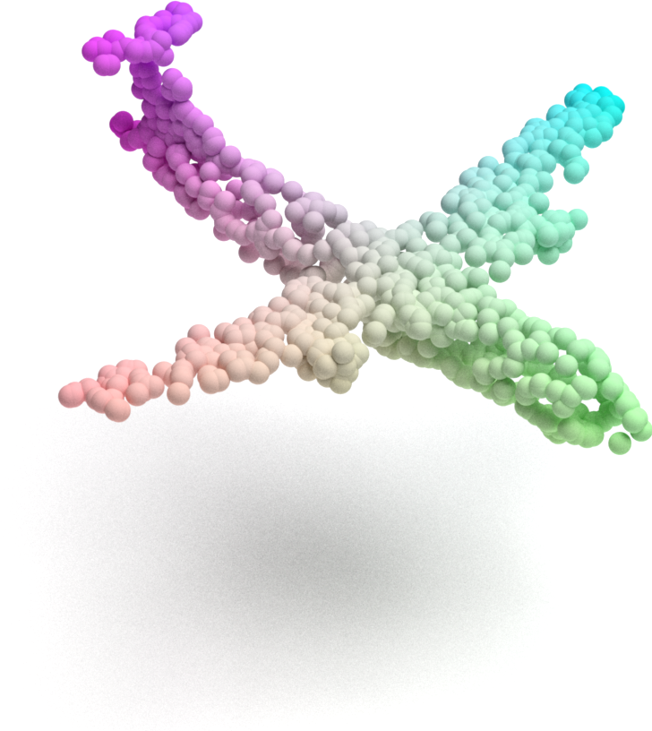
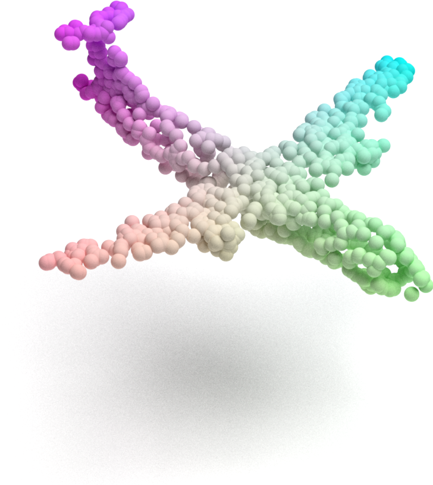
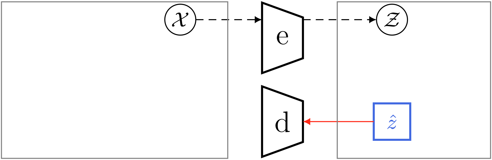
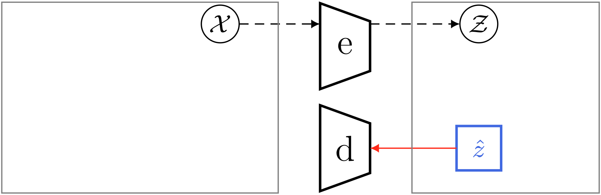

PAD
Recalage de nuages de points multiples par apprentissage profond
Application à la microscopie de localisation de molécule unique
Thèse soutenue à Strasbourg le 12 novembre 2025 par Luc Vedrenne
Direction de la thèse
Denis Fortun
Sylvain Faisan
Composition du jury
Nicolas Dobigeon
Julie Digne
Cédric Demonceaux
Nicollas Mellado
Recalage de nuages de points multiples par apprentissage profond
Application à la microscopie de localisation de molécule unique
Recalage de nuages de points multiples par apprentissage profond
Application à la microscopie de localisation de molécule unique
Recalage de nuages de points multiples par apprentissage profond
Application à la microscopie de localisation de molécule unique
I - Contexte
I.A Microscopie de localisation de molécule unique
I.A Single Molecule Localization Microscopy
Qu'est-ce que c'est ?
• Microscopie optique

- Facile
- Rapide
- Peu coûteux
- Limite physique de diffraction
$\approx 200\,\text{nm}$
I.A Single Molecule Localization Microscopy
Qu'est-ce que c'est ?
• Super-résolution

I.A Single Molecule Localization Microscopy
Qu'est-ce que c'est ?
• Super-résolution


Estimateur MLE fitté sur la PSF connu
Incertitude de localisation
I.A Single Molecule Localization Microscopy
Qu'est-ce qu'on veut ?
• Reconstruire un modèle 3D précis de la particule
Observation trop dégradée
- Marquage fluorescent imparfait : occlusion
- Structures parasites : outliers
- Résolution fortement anisotrope
I.A Single Molecule Localization Microscopy
Dégradations
• Référence
I.A Single Molecule Localization Microscopy
Dégradations
1. Anisotropie
I.A Single Molecule Localization Microscopy
Dégradations
2. Occlusion
I.A Single Molecule Localization Microscopy
Qu'est-ce qu'on veut ?
• Reconstruire un modèle 3D précis de la particule


I.B Nuage de points
Qu'est-ce que c'est ?
$$x = \left\{ x_i \in \mathbb{R}^3 \right\}$$
I.C Recalage rigide
Qu'est-ce que c'est ?
• Recaler = Aligner deux nuages de points
I.C Recalage rigide
Qu'est-ce que c'est ?
• Recaler = Aligner deux nuages de points
• Transformation rigide (mouvement)
$$\textcolor{#4169e1}{\mathrm{T}}x=\left\{ \textcolor{#4169e1}{\mathrm{R}} x_i + \textcolor{#4169e1}{\mathrm{t}} \right\}$$
- $\textcolor{#4169e1}{\mathrm{R}} \in \mathrm{SO(3)}$ : rotation
- $\textcolor{#4169e1}{\mathrm{t}} \in \mathbb{R}^3$ : translation
• Problème d'optimisation
$$\argmin_{\textcolor{#4169e1}{\mathrm{T}}} \,\mathrm{C}\!\left(\textcolor{#4169e1}{\mathrm{T}}x, y \right)$$
- $\mathrm{C}$ : critère, fonction de coût
- $\argmin$ : procédure de minimisation
I.C Recalage rigide
Pourquoi c'est dur ?
Solution naïve : Iterative Closest Point
1. Mise en correspondance
2. Déterminisation du mouvement
1. $\quad \displaystyle{s: \textcolor{#4169e1}{i} \mapsto \argmin_{\textcolor{#cd5c5c}{j}} \,\lVert x_{\textcolor{#4169e1}{i}} - y_{\textcolor{#cd5c5c}{j}} \rVert}$
2. $\quad \displaystyle{\argmin_{\mathrm{T}} \, \sum_i \lVert \mathrm{T} x_i - y_{s(i)} \rVert^2}$
I.C Recalage rigide
Pourquoi c'est dur ?
Solution naïve : Iterative Closest Point
I.C Recalage rigide
Pourquoi c'est dur ?
Solution naïve : Iterative Closest Point
I.C Recalage rigide
Pourquoi c'est dur ?
Solution naïve : Iterative Closest Point

• Critère fiable
• Convergence vers un minimum local
• Sensibilité aux conditions initiales
Problème d'optimisation
I.C Recalage rigide
Pourquoi c'est dur ?
Solution naïve : Iterative Closest Point

I.C Recalage rigide
Pourquoi c'est dur ?
Solution naïve : Iterative Closest Point

Problème de critère
I.C Recalage rigide
Pourquoi c'est dur ?
1. Problème d'optimisation : convergence vers un minimum local
- symmétries, patterns répétitifs
2. Problème de critère : fonction de coût non fiable
- données dégradées
I.C Recalage rigide
Qu'est-ce qui existe ?
1. Problème d'optimisation
- Branch-and-Bound [1]

- Approximations [2]


[1] J. Yang et al., Go-ICP: A Globally Optimal Solution to 3D ICP Point-Set Registration, TPAMI, 2016.
[2] H. Biggie et al., BO-ICP: Initialization of Iterative Closest Point Based on Bayesian Optimization, ICRA, 2023.
I.C Recalage rigide
Qu'est-ce qui existe ?
2. Problème de critère
- Descripteurs riches


- Assignement probabiliste


[1] K. Crane et al., Digital Geometry Processing with Discrete Exterior Calculus, SIGGRAPH, 2013.
[2] H. Wang et al., You Only Hypothesize Once: Point Cloud Registration with Rotation-equivariant Descriptors, ACM MM, 2022.
[3] G. Peyré, M. Cuturi, Computational Optimal Transport, Foundations and Trends in Machine Learning, 2018.
[4] Y. Yi, T. Harada, Lepard: Learning partial point cloud matching in rigid and deformable scenes, CVPR, 2022.
I.D Extensions multivues
- Ensemble de $N$ vues
- Trouver $N$ mouvements rigides alignant les $N$ vues
Deux approches
1. Tous les recalages paire-à-paires, puis synchronisation

- Coûteux si beaucoup de vues: $\,\mathcal{O}(N^2)$
- Synchronisation robuste aux faux recalages paire-à-paires
I.D Extensions multivues
- Ensemble de $N$ vues
- Trouver $N$ mouvements rigides alignant les $N$ vues
Deux approches
2. Approche générative

- Meilleur scaling: $\,\mathcal{O}(N)$
- Robuste
- Optimisation plus dure
- Typically : EM-GMM
Bilan
Trois défis à relever
1
Convergence
globale
2
Robustesse
aux données dégradées
3
Scalabilité
avec le nombre de vues
II - Contributions
II.A Convergence globale
II.A Convergence globale
Idée intuitive : Multi-start
1. Identifier les minima locaux
- Discrétisation uniforme de l'ensemble de mouvements rigides
- Calcul du coût pour tous les mouvements de ce sampling
- Détection des coûts inférieurs à tous ceux de leur voisinage
II.A Convergence globale
Idée intuitive : Multi-start
1. Identifier les minima locaux
- Discrétisation uniforme de l'ensemble de mouvements rigides
- Calcul du coût pour tous les mouvements de ce sampling
- Détection des coûts inférieurs à tous ceux de leur voisinage
II.A Convergence globale
Idée intuitive : Multi-start
1. Identifier les minima locaux
- Discrétisation uniforme de l'ensemble de mouvements rigides
- Calcul du coût pour tous les mouvements de ce sampling
- Détection des coûts inférieurs à tous ceux de leur voisinage
II.A Convergence globale
Idée intuitive : Multi-start
1. Identifier les minima locaux
- Discrétisation uniforme de l'ensemble de mouvements rigides
- Calcul du coût pour tous les mouvements de ce sampling
- Détection des coûts inférieurs à tous ceux de leur voisinage
II.A Convergence globale
Idée formalisée : Groupe de Lie
• Sampling : super-spirales de Fibonacci
• Voisinage : distance géodésique canonique


K. Crane et al., Digital Geometry Processing with Discrete Exterior Calculus, SIGGRAPH, 2013.
II.A Convergence globale
Exemple
 



II.A GRIP - Global Registration Initializer for Point Cloud
Exemple
II.A GRIP - Global Registration Initializer for Point Cloud
• Initialisation plug-and-play
• Via parallélisation : faible surcoût computationnel


1
Echantillonnage
$\mathrm{SE(3)}^N$
2
Minima locaux
$\left\{\mathrm{C}\!\left(\mathrm{T}x, y\right),\, \mathrm{T} \in \mathrm{SE(3)}^N \right\}$
3
Raffinements
4
Sélection
II.A GRIP - Global Registration Initializer for Point Cloud
Résultats
• Sampling : Aléatoire ou Uniforme
• Sélection initialisations : Absolue ou Locale
II.A GRIP - Global Registration Initializer for Point Cloud
Résultats
• Sampling : Aléatoire ou Uniforme
• Sélection initialisations : Absolue ou Locale
II.A GRIP - Global Registration Initializer for Point Cloud
Résultats
• Sampling : Aléatoire ou Uniforme
• Source d'erreur : Critère ou Optimisation
II.B Une solution globale, multivue et robuste
II.B Une solution globale, multivue et robuste
Qu'est-ce qu'on veut ?
1. Optimisation globale - GRIP
2. Robustesse - pas de correspondances locales
3. Multivues - approche générative
II.B Une solution globale, multivue et robuste
Idée centrale
1. Pré-entraîner un autoencodeur
2. Une fois entraîné, le figer
3. Effectuer le recalage dans son espace latent
II.B Une solution globale, multivue et robuste
Autoencoder

$\mathcal{L} = \lVert x - x' \rVert$
II.B Une solution globale, multivue et robuste
Approche générative
- 1 template $\textcolor{#4169e1}{z}$
- N mouvements rigide $\textcolor{#4169e1}{\rho_i}$
Modèle graphique
$\mathcal{X}$ : nuages à recaler


 



$\mathcal{L} = \sum_i \lVert \mathrm{e}(\textcolor{royalblue}{\hat{\rho}_i} \mathrm{d}(\textcolor{royalblue}{\hat{z}}) ) - \mathrm{e}(x_i) \rVert_{_{_2}}^{{^2}}$
II.B POLAR - POint cloud LAtent Registration
Approche générative
- 1 template $\textcolor{#4169e1}{z}$
- N mouvements rigide $\textcolor{#4169e1}{\rho_i}$
Modèle graphique
$\mathcal{X}$ : nuages à recaler
$\mathcal{L} = \sum_i \lVert \mathrm{e}(\textcolor{royalblue}{\hat{\rho}_i} \mathrm{d}(\textcolor{royalblue}{\hat{z}}) ) - \mathrm{e}(x_i) \rVert_{_{_2}}^{{^2}}$
II.B POLAR - POint cloud LAtent Registration
Modèle de dégradations
$\mathcal{L} = \sum_i \lVert \mathrm{e}(\textcolor{royalblue}{\hat{\rho}_i} \mathrm{d}(\textcolor{royalblue}{\hat{z}}) ) - \mathrm{e}(x_i) \rVert_{_{_2}}^{{^2}}$
Propre
Dégradé
pad
$\mathcal{L} = \sum_i \lVert e(\hat{\rho}_i d(\hat{z}) ) - e(x_i) \rVert_{_{_2}}^{{^2}}$
$\mathcal{L} = \sum_i \lVert e(\hat{\rho}_i d(\hat{z}) + \textcolor{red}{\varepsilon}) - e(x_i) \rVert_{_{_2}}^{{^2}}$
$\mathcal{L} = \sum_i \lVert e(\textcolor{seagreen}{\operatorname{M}_i^c}(\hat{\rho}_i d(\hat{z}) + \textcolor{red}{\varepsilon})) - e(x_i) \rVert_{_{_2}}^{{^2}}$
$\mathcal{L} = \sum_i \lVert e(\textcolor{seagreen}{\operatorname{M}_i^c}(\hat{\rho}_i d(\hat{z}) + \textcolor{red}{\varepsilon})) - e(\textcolor{peru}{\operatorname{M}_i^o}(x_i)) \rVert_{_{_2}}^{{^2}}$
$\textcolor{red}{\text{bruit anisotrope}}$
$\textcolor{seagreen}{\text{occlusion}}\hspace{40pt}\textcolor{red}{\text{bruit anisotrope}}$
$\textcolor{seagreen}{\text{occlusion}}\hspace{40pt}\textcolor{red}{\text{bruit anisotrope}}\hspace{20pt}\textcolor{peru}{\text{outliers}}\hspace{60pt}$
$\sim \mathcal{N}(0, \Sigma)$
$\sim \mathcal{N}(0, \Sigma)$
$\sim \mathcal{N}(0, \Sigma)$
II.B POLAR - POint cloud LAtent Registration
Modèle de dégradations - Masques


II.B POLAR - POint cloud LAtent Registration
Avantages de l'espace latent
pad
1. A priori de formes
- Pré-entraînement
2. Approche générative
- template $=$ $d(\hat{z})$ au lieu de GMM
3. Descripteur global
- pas de correspondences locales
- Coût $=$ $\lVert z_1 - z_2 \rVert$
4. Efficacité en temps
- bon scaling avec le nombre de points
II.B POLAR - POint cloud LAtent Registration
Résultats
| Nom | Idée clée | Globale | Multivue | Générative |
|---|---|---|---|---|
| GeoT | Attention géométrique | ✅ | 🚫 | 🚫 |
| RoITr | GeoT invariant aux rotations | ✅ | 🚫 | 🚫 |
| SGHR | graphe de pose robuste et éparse | ✅ | ✅ | 🚫 |
| POLAR | génératif et latent | ✅ | ✅ | ✅ |
II.B POLAR - POint cloud LAtent Registration
Résultats quantitatifs
Robustesse au bruit anisotrope
$\varepsilon \sim \mathcal{N}(0, \Sigma = \operatorname{diag}(0.05, 0.05, 0.15))$
II.B POLAR - POint cloud LAtent Registration
Résultats quantitatifs
Impact du nombre de vues
II.B POLAR - POint cloud LAtent Registration
Résultats quantitatifs
Temps de calcul
II.B POLAR - POint cloud LAtent Registration
Résultats qualitatifs
• Bruit anisotrope
II.B POLAR - POint cloud LAtent Registration
Résultats qualitatifs
• Occlusion
II.B POLAR - POint cloud LAtent Registration
Résultats qualitatifs
• Données SMLM
II.B POLAR - POint cloud LAtent Registration
Résultats qualitatifs
• Données SMLM

II.C Des méthodes aux outils
II.C Des méthodes aux outils
1. JRMPC
$ pip install jrmpc
from jrmpc import jrmpc
views: list[Tensor] = ... # list of M tensors (3, N_i)
result = jrmpc(views)
template, R_hat, t_hat = result.X, result.R, result.t
II.C Des méthodes aux outils
2. GRIP
$ pip install gripcd
from grip import PairwiseGRIP, icp
sources, models = ... # two list of tensors (3, N_i)
estimator = PairwiseGRIP(icp)
T_hat = estimator(sources, models)
II.C Des méthodes aux outils
3. POLAR
$ pip install polaregistration
from polar import POLAR
views: list[Tensor] = ... # list of M tensors (3, N_i)
degradations = dict(sigmas=(0.5,0.5,0.15),
keep_ratio=0.7,
outliers_ratio=0.2)
model = POLAR(**degradations)
X_hat = model.fit_transform(views)
III - Perspectives & Conclusion
III.A Perspective
• Transposition latente
- Autoencodeur plus fort
- Plus ou moins global, multi-échelles
- Cross-datasets & Cross-modalités
• Critère plus qu'optimisation
- A priori de formes
- Apprentissage du critère
• Reconstruction de particules
- Utilise les images en amont
III.A Conclusion
PAD
1
Convergence
globale
2
Robustesse
aux données dégradées
3
Scalabilité
avec le nombre de vues
GRIP
POLAR